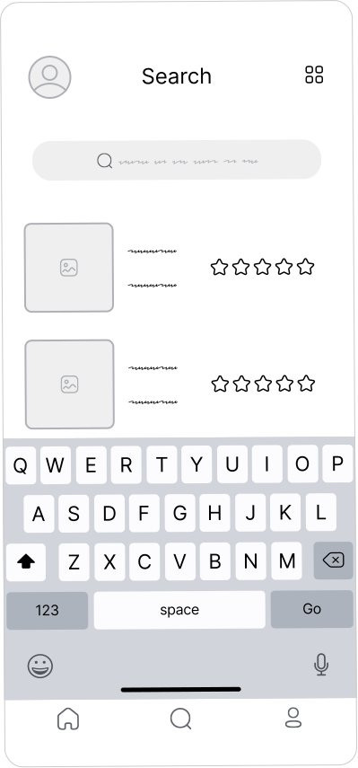
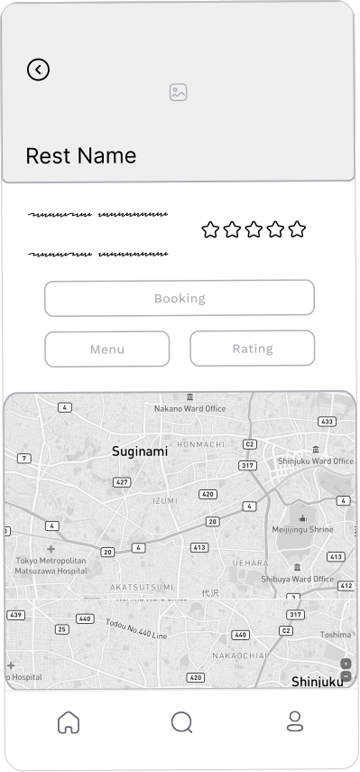
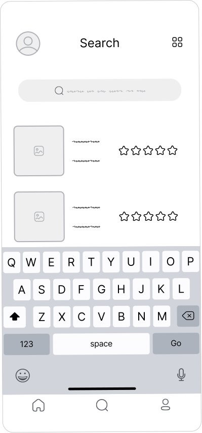
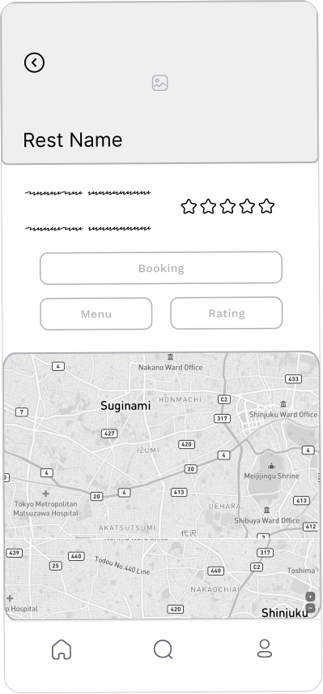

Elevate Your Dining Experience with FODIS
Seamless Table Reservations at Your Fingertips
A mobile application designed to facilitate table reservations, enabling users to book tables at designated times and conveniently identify the location through an integrated mapping feature.
Role: Research & UI/UX
Timeline: April - June 2022

Problem Statement
Individuals may find themselves in the need to reserve a table at a
restaurant for various reasons, including social gatherings with
friends, business dinners, or routine breaks.
The desire is often to streamline the booking process, enabling
swift reservations while also gaining quick access to the
restaurant's menu.
This ensures not only a seamless booking experience but also
provides the convenience of perusing available menu options in
advance, catering to preferences for specific types of cuisine.
The goal
- Develop an application that facilitates seamless and prompt table reservations for users.
- Share reservation details effortlessly with friends.
- Register using various platforms for user convenience.
- Provide the functionality to rate and review, as well as view others' ratings
- Preview the restaurant menu prior to making a reservation.
Research
In conducting a thorough review of articles pertaining to restaurant
reservations, prompted by a scarcity of experience in this domain
and the absence of such services within the country, I endeavored to
cultivate a comprehensive understanding of the user demographic by
constructing empathy maps.
The primary user cohort discerned through meticulous research
comprised working professionals who dine at restaurants twice a day.
While this group affirmed initial hypotheses about the preferences
of FODIS APP customers, the research also brought to light that user
constraints extended beyond a mere desire for ease of use.
Additional challenges surfaced, notably the time-consuming nature of
traditional booking methods involving phone calls or email
exchanges.
Information Architecture

Wireframes
Investing time in sketching multiple iterations of each app screen
on paper was a strategic step aimed at ensuring that the elements
eventually incorporated into the digital wireframes would
effectively address user pain points.
In the conceptualization of the home screen, my emphasis was on
presenting a user-friendly list of restaurants, a deliberate choice
aimed at optimizing user time. Prior to commencing the formal design
phase, the wireframe served as a foundational tool, providing a
preliminary visualization of the overall design direction.

 



Design
Challenge1
I undertook the task of crafting an application that enables
users to effortlessly and swiftly reserve tables.
This
endeavor was facilitated by the intentional design of screens,
wherein users are presented with a curated list of options from
which to choose.
Additionally, I incorporated a search functionality to empower
users in locating a specific place swiftly and with ease.
Challenge2
Facilitating the sharing of reservation details with friends,
particularly in scenarios involving multiple individuals, was
addressed by assigning the user responsible for the reservation
and incorporating a streamlined solution.
To achieve this, I implemented a user-friendly share button,
enabling the reservation initiator to send notifications
containing the pertinent details to the involved parties
efficiently.

Challenge3
Enable seamless user registration by integrating with various platforms, ensuring a straightforward and convenient sign-in process.

Challenge4
Empower users with the capability to both review and provide feedback on others' experiences, fostering a comprehensive system for rating and reviewing within the application.

Challenge5
Enable users to preview the restaurant menu prior to making a reservation, providing a valuable opportunity to assess dining options and enhance the overall reservation experience.

Style Guide
Leveraging a color palette predominantly derived from blue, chosen
for its association with confidence and strength, enhances the
product's visual appeal.
The Oswald font type for headings imparts a classic aesthetic, while
the use of Roboto for the main app contributes to a cohesive and
modern design.
The amalgamation of these elements results in a calm and trusted
application.
Takeaways
Commencing my first UX/UI project posed initial challenges due to a
lack of concrete information. To address this, I conducted a
comprehensive competitive audit as the foundation for primary
research.
This experience underscored the understanding that initial app
concepts represent just the starting point in the design process.
Subsequent iterations were informed by usability studies and valuable
feedback from peers.
Throughout the process, I had the opportunity to explore and
experiment with various features within the Figma design tool.